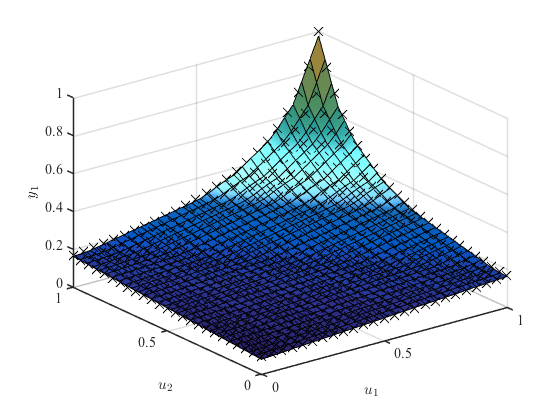

hilomotDemo2 Demo 2: Static process with 2 inputs and 1 output.
HiLoMoT - Nonlinear System Identification Toolbox
Benjamin Hartmann, 04-April-2012
Institute of Mechanics & Automatic Control, University of Siegen, Germany
Copyright (c) 2012 by Prof. Dr.-Ing. Oliver Nelles
LMN = hilomot;
[u1g, u2g] = meshgrid(linspace(0,1,25), linspace(0,1,25));
u1 = u1g(:);
u2 = u2g(:);
y = 0.1./(0.1+(1-u1)/2+(1-u2)/2);
LMN.input = [u1 u2];
LMN.output = y;
LMN.minError = 0.05;
LMN = LMN.train;
figure
LMN.plotModel
figure
LMN.plotPartition
[u1G, u2G] = meshgrid(linspace(0,1,30), linspace(0,1,30));
u1G = u1G(:);
u2G = u2G(:);
yG = 0.1./(0.1+(1-u1G)/2+(1-u2G)/2);
yGModel = calculateModelOutput(LMN, [u1G u2G], yG);
JG = calcGlobalLossFunction(LMN ,yG, yGModel);
yGModelQuick = calculateModelOutputQuick(LMN, [u1G(23,:) u2G(23,:)]);
xInputDelay is empty, defaults are used: xInputDelay(1:p) = {0}
zInputDelay is empty, defaults are used: zInputDelay(1:p) = {0}
xOutputDelay is empty, defaults are used: xOutputDelay(1:p) = {[]}
zOutputDelay is empty, defaults are used: zOutputDelay(1:p) = {[]}
Initial net has 1 local model(s): J = 0.545790
1. Iteration. Number of local models = 1. Checking for split of model 1 ...
Testing split in dimension 1: J = 0.413161
Testing split in dimension 2: J = 0.413161
Axes-oblique splitting: J = 0.193775
-> SPLITTING RESULT: J = 0.193775
2. Iteration. Number of local models = 2. Checking for split of model 3 ...
Testing split in dimension 1: J = 0.175159
Testing split in dimension 2: J = 0.175159
Testing parent split: J = 0.143329
Axes-oblique splitting: J = 0.135374
-> SPLITTING RESULT: J = 0.135374
3. Iteration. Number of local models = 3. Checking for split of model 2 ...
Testing split in dimension 1: J = 0.095674
Testing split in dimension 2: J = 0.095674
Testing parent split: J = 0.061849
Axes-oblique splitting: J = 0.056485
-> SPLITTING RESULT: J = 0.056485
4. Iteration. Number of local models = 4. Checking for split of model 5 ...
Testing split in dimension 1: J = 0.055978
Testing split in dimension 2: J = 0.055978
Testing parent split: J = 0.050732
Axes-oblique splitting: J = 0.050691
-> SPLITTING RESULT: J = 0.050691
5. Iteration. Number of local models = 5. Checking for split of model 4 ...
Testing split in dimension 1: J = 0.046341
Testing split in dimension 2: J = 0.046341
Testing parent split: J = 0.039242
Axes-oblique splitting: Optimization Failed!
-> SPLITTING RESULT: J = 0.039242
Error limit reached.
Final net has 6 local models and 28 parameters: J = 0.039242
Net 6 with 6 LMs and 28 parameters is suggested as the model with the best complexity trade-off.Plot model for dimensions 1 and 2.
Plot partitioning for dimensions 1 and 2.
ans =
1×6 Contour array:
Contour Contour Contour Contour Contour Contour
